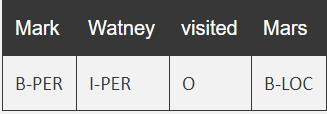

While I am broadly interested in topics related to artificial intelligence (AI) and wireless communication (WC), my current focus is on natural language proceessing (NLP), recommendation system and machine learning (ML). During my school time, I focused on multi-carrier modulation scheme in the area of wireless communication system.
Named-entity recognition (NER) (also known as entity identification, entity chunking and entity extraction) is a subtask of information extraction that seeks to locate and classify named entity mentions in unstructured text into pre-defined categories such as the person names, organizations, locations, medical codes, time expressions, quantities, monetary values, percentages, etc. Approaches typically use BIO notation, which differentiates the beginning (B) and the inside (I) of entities. O is used for non-entity tokens.
Example:
Publications(s): [Patent]
Filter Bank MultiCarrier, FBMC is a form of multi-carrier modulation that has its origins within OFDM. It is a development of OFDM and aims to overcome some of the issues, although this comes at the cost of increased signal processing. FBMC has a much better usage of the available channel capacity and is able to offer higher data rates within a given radio spectrum bandwidth, i.e. it has a higher level of spectrum efficiency.
FBMC advantagesPublications(s): [TSP]